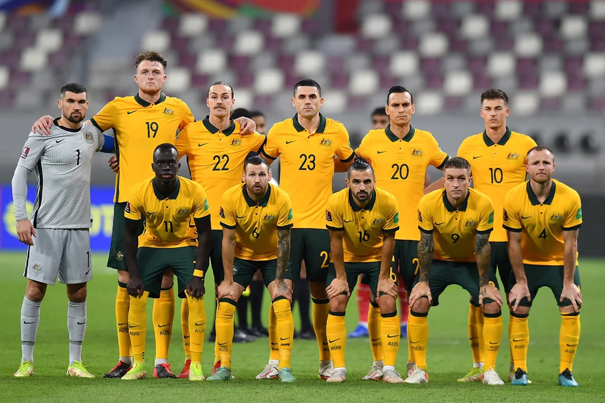

ARABIA SAUDITA
- ARQUEROS: Mohammed Al-Owais,Mohammed Alyami y Nawaf Al-Aqidi.
- DEFENSORES: Yasser Al-Shahrani,Feras Al-Brikan,Ali Al-Bulayhi,Sultan Al-Ghannam,Saul Abdulhamid,Abdulelah Al-Amri,Hassan Al-Tambakti y Abdullah Madu.
- MEDIOCAMPISTAS: Nasser Al-Dawsari,Salman Al-Faraj,Abdullah Otayf,Hattan Bahbri,Mohammed Kanno,Abdulelah Al-Malki,Sami Al-Najei,Ali Al-Hassan,Salem Al-Dawsari,Riyadh Sharahili y Al-Aboud.
- DELANTEROS: Mohammed Al-Burayk,Nawaf Al- Abed,Saleh Al-Shehri y Haitham Asiri.
- DT: HERVÉ RENARD.
GRUPO C:
- ARGENTINA
- ARABIA SAUDITA
- MÉXICO
- POLONIA
MUNDIALES JUGADOS:
USA'94 (8vos), FRANCIA'98 (1ra fase),COREA-JAPÓN'02 (1ra fase),ALEMANIA'06 (1ra fase),RUSIA'18 (1ra fase).

AUSTRALIA
- ARQUEROS: Matt Ryan, Andrew Redmayne, Danny Vukovic.
- DEFENSORES: Milos Degenek, Aziz Behich, Joel King, Nathaniel Atkinson, Kye Rowles, Fran Karacic, Harry Souttar, Bailey Wright y Thomas Deng.
- MEDIOCAMPISTAS: Aaron Mooy, Jackson Irvine, Ajdin Hrustic, Keanu Baccus, Cameron Devlin y Riley McGree.
- DELANTEROS: Awer Mabil, Mathew Leckie, Martin Boyle, Jamie Maclaren, Jason Cummings, Garang Kuol, Mitchell Duke y Craig Goodwin.
- DT: GRAHAM ARNOLD.
GRUPO D:
- FRANCIA
- AUSTRALIA
- DINAMARCA
- TÚNEZ

MUNDIALES JUGADOS:
ALEMANIA'74 (1ra fase),ALEMANIA'06 (8vos),SUDÁFRICA'10 (1ra fase),BRASIL'14 (1ra fase),RUSIA'18 (1ra fase).
COREA DEL SUR
- ARQUEROS: Kim Seung-Gyu, Jo Hyeon-Woo, Song Bum-Keun.
- DEFENSORES: Kim Min-Jae, Kim Young-Gwon, Kwon Kyung-Won, Cho Yu-Min, Kim Moon-Hwan, Yoon Jong-Gyu, Kim Tae-Hwan, Kim Jin-Su, Hong Chul.
- MEDIOCAMPISTAS: Jung Woo-Young, Son Jun-Ho, Paik Seung-Ho, Hwang In-Beom, Lee Jae-Sung, Kwon Chang-Hoon, Jeong Woo-Yeong, Lee Kang-In, Son Heung-Min, Hwang Hee-Chan, Na Sang-Ho, Song Min-Kyu.
- DELANTEROS: Hwang Ui-Jo, Cho Gue-Sung.
- DT: PAULO BENTO.
GRUPO H:
- PORTUGAL
- GHANA
- URUGUAY
- COREA DEL SUR
MUNDIALES JUGADOS:
SUIZA'54 (1ra fase),MÉXICO'86 (1ra fase),ITALIA'90 (1ra fase),USA'94 (1ra fase),FRANCIA'98 (1ra fase),COREA-JAPÓN (4to puesto),ALEMANIA'06 (1ra fase),SUDÁFRICA'10 (8vos),BRASIL'14 (1ra fase),RUSIA'18 (1ra fase).

IRÁN
- ARQUEROS: Amir Abedzadeh, Alireza Beiranvand, Hossein Hosseini y Payam Niazmand.
- DEFENSORES: Rouzbeh Cheshmi, Abolfazl Jalali, Majid Hosseini, Hossein Kanaani, Shoja Khalilzadeh, Milad Mohammadi, Sadegh Moharrami, Morteza Pouraliganji y Ramin Rezaeian.
- MEDIOCAMPISTAS: Vahid Amiri, Saeid Ezzatollahi, Saman Ghoddos, Ali Gholizadeh, Haji Safi, Ali Karimi y Ahmad Nourollahi.
- DELANTEROS: Karim Ansarifard, Sardar Azmoun, Alireza Jahanbakhsh, Mehdi Taremi y Mehdi Torabi.
- DT: CARLOS QUEIROZ.
GRUPO B:
- INGLATERRA
- IRÁN
- USA
- GALES
MUNDIALES JUGADOS:
ARGENTINA'78 (1ra fase),FRANCIA'98 (1ra fase),ALEMANIA'06 (1ra fase),BRASIL'14 (1ra fase),RUSIA'18 (1ra fase).

JAPÓN
- ARQUEROS: Shuichi Gonda, Daniel Schmidt, Eiji Kawashima.
- DEFENSORES: Miki Yamane, Hiroki Sakai, Maya Yoshida, Takehiro Tomiyasu, Shogo Taniguchi, Ko Itakura, Hiroki Ito, Yuto Nagatomo.
- MEDIOCAMPISTAS: Wataru Endo, Hidemasa Morita, Ao Tanaka, Gaku Shibasaki, Kaoru Mitoma, Daichi Kamada, Ritsu Doan, Junya Ito, Takumi Minamino, Takefusa Kubo, Yuki Soma.
- DELANTEROS: Daizen Maeda, Takuma Asano, Ayase Ueda y Shuto Machino.
- DT: HAJIME MORIYASU.
GRUPO E:
- ESPAÑA
- COSTA RICA
- ALEMANIA
- JAPÓN
MUNDIALES JUGADOS:
FRANCIA'98 (1ra fase),COREA-JAPÓN (8vos),ALEMANIA'06 (1ra fase),SUDÁFRICA'10 (8vos),BRASIL'14 (1ra fase),RUSIA'18 (8vos).

QATAR
- ARQUEROS: Al Sheeb, Barsham y Hassan.
- DEFENSORES: Correia, Khidir, Al-Rawi, Salman, Khoukhi, Hassan, Mohammad, Al Amin y Jabir.
- MEDIOCAMPISTAS: Waad, Asad, Hajri, Madibo, Meshaal, Boudiaf, Hatim y Al Hadhrami.
- DELANTEROS: Al Haydos, Alif, Muntari, Muneer y Alaa.
- DT: FÉLIX SÁNCHEZ BAS.
GRUPO A:
- QATAR
- ECUADOR
- SENEGAL
- PAÍSES BAJOS
MUNDIALES JUGADOS:
Primer mundial en 2022.